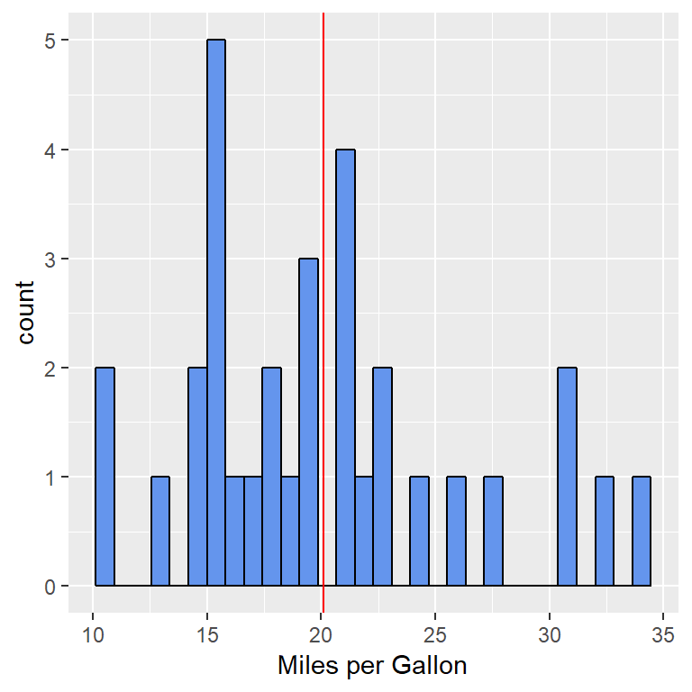
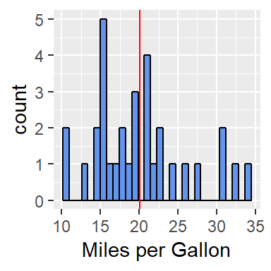
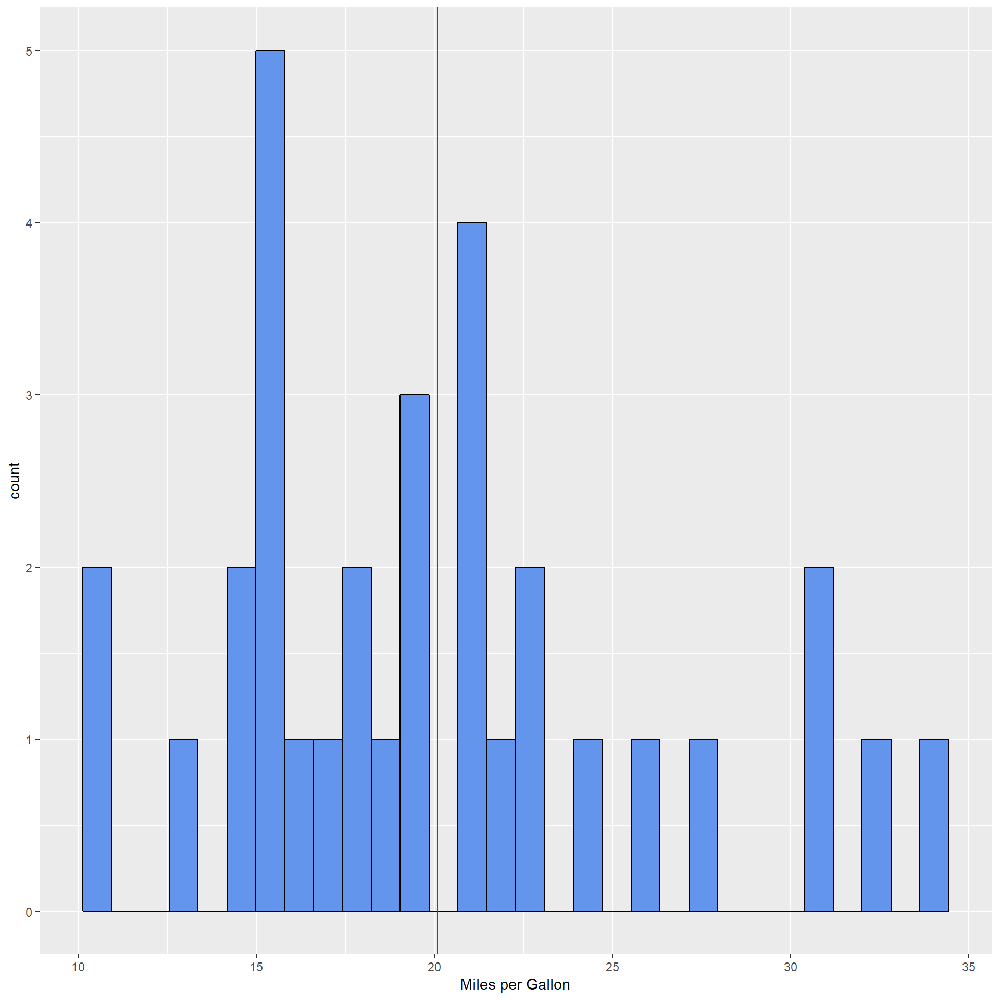
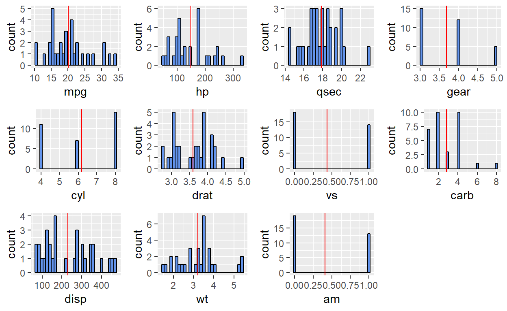

Welkom!
Deze workshop is eerder gegeven door Schmidt op 11 Mei 2016 en er waren wat aanvullende materialen beschikbaar:
- Klas notities die voor de workshop konden worden gebruikt etherpad.
- De workshop is ook live opgenomen en beschikbaar op YouTube. Kijk naar dit college op YouTube! Zeer leerzaam.
Deze tutorial is gemaakt als onderdeel van een programma van Dr. C Titus Brown’s Data Intensive Biology (DIB) trainingsprogramma op de Universiteit van Californie, Davis. Dit DIB trainingsprogramma omvat lokale + remote workshops die onderwerpen en gereedschappen behandelen in de bio-informatica en data analyse.
Het college werd gegeven vanuit Ann Arbor Michigan en drie klassen van elders deden tegelijkertijd mee:
- Universiteit van Californi?, Davis
- Simon Fraser Universiteit
- Ontario Instituut for Kanker Onderzoek
De Github repository, die ik binnen heb gehaald en hier gebruik voor deze les, kan worden gevonden op hier.
Opgelet: Dit soort werk introduceert wel een groot aantal Engelse woorden in onze Nederlandse taal. Enkele daarvan heb ik laten staan, niet omdat ik ze mooi vind maar omdat ze al overal gebruikt worden. Gewone mensen praten al over bijvoorbeeld renderen, cachen, files, widgets en output. Met excuses hiervoor, bij voorbaat.
Instructies bij het installeren
Voordat je gaat werken met de workshopmaterialen, zorg ervoor dat je het volgende hebt gedaan:
- Open RStudio.
- Installeer en download het devtools R pakket door het volgende commando te runnen.
- Check of je de goede versie hebt van R en RStudio door
devtools::session_info()in de R console te draaien.
Hier geeftdevtools::aan om desession_info()functie in R te gebruiken ipv het devtools pakket en desessionInfo()functie binnen het utils pakket. Het runnen vandevtools::session_info()stelt ons in staat de versie van R en RStudio vast te stellen.
Heb je de volgende versie van R en RStudio?
- R:
Versie 3.3.0 (2016-05-03)
RStudio:
0.99.1172- Zo ja dan kun je van start gaan!
- Zo nee dan heb je nieuwe versies van R en RStudio nodig, volg dan Setup in dit document.
- Zo ja dan kun je van start gaan!
- Installeer andere R pakketten die nodig zijn voor deze workshop.
- Als je de pakketten zonder fouten hebt geladen, ben je klaar voor deze workshop!
Zijn er nog problemen, meld het ajb!
Goede bronnen
Deze tutorial kon niet samengesteld worden zonder onderstaande goede bronnen:
- De RMarkdown website van RStudio.
- Dr. Yuhui Xie’s boek: Dynamic Documents with R and Knitr 2nd Edition [@Xie2015] en zijn Knitr website.
- HEEL VEEL DANK aan Dr. Xie voor het schrijven van het knitr pakket!!
- HEEL VEEL DANK aan Dr. Xie voor het schrijven van het knitr pakket!!
- Dr. Karl Broman’s “Knitr in a Knutshell”.
- Cheatsheets released by RStudio.
Dynamische documenten
Literate programming, zoals dat in het Engels wordt genoemd, is het basisidee achter dynamische documenten en is ge?ntroduceerd door Donald Knuth in 1984. Oorspronkelijk om de broncode en de bijbehorende software documentatie samen te brengen. Tegenwoordig cre?ren we dynamische documenten waarin het programma of de analyse code samen draaien om tot ‘outputs’ te komen (bv. tabellen, plots, modellen, etc) die worden uitgelegd via narratief schrijven.
De drie stappen van Literate Programming:
- Parse het bron document en haal de code en het verhaal uit elkaar.
- Execute bron code en laat de resultaten zien.
- Mix resultaten van de broncode met het orginele verhaal.
Er blijven 2 stappen voor ons voor wat betreft het schrijven:
- Analyse code
- Een verhaal om de resultaten van de analyse code toe te lichten.
Traditioneel gebruikten mensen commentaren om het verhaal in de code file kwijt te kunnen raken (voor R zou dat een .R file zijn). Deze file zou het volgende in kunnen houden:
# Titel: Relatie tussen Autogewicht en Gasefficientie/of-verbruik
# Door : Marian Schmidt
# Datum: 11 Mei 2016
# Ik verspel dat er een relatie is tussen het gewicht van de auto en de afstand die met de brandstof afgelegd kan worden.
# Dat test ik met een lineaire analyse van de ''mtcarsdataset' als onderdeel van de R datasets
# Hoe zien de data eruit?
#datatable(mtcars) # Interactieve tabel
# Is er een relatie tussen het gewicht en de afstand per, in dit geval, gallon?
lm_mpg <- lm(mpg ~ wt, data = mtcars) # Run het lineaire model dat mpg voorspelt op basis van wt
coef_lm_mpg <- coef(summary(lm_mpg)) # Haal de coefficienten eruit voor de tabel die komt
kable(coef_lm_mpg) # Maak een niet-interactieve tabel - een functie in knitr
# Plot de relatie tussen gewicht en afstand in mijl per gallon
plot <- ggplot(mtcars, aes(x = wt, y = mpg)) + geom_point() + #
geom_smooth(method = "lm") + theme_bw() + # Maak een lineair model en maak het zwart en wit
xlab("Weight (1000lbs)") + ylab("Miles per Gallon") # Voeg tekst aan de assen toe
ggplotly(plot) # Maak de plot interactief
# Het lijkt erop dat met een toename van 1000 pounds er een afname is van brandstof gebruik met 5.34 mijl per gallon
# Het eindDe gebruiker zal de commentaren lezen en de codes zelf runnen.
Echter, ‘literate programming’ stelt ons in staat de code te runnen en de resultaten te beschrijven, allemaal in een document dat we kunnen delen. We zouden bijvoorbeeld het volgende kunnen doen:
Relatie tussen gewicht van de auto en het brandstofverbruik
Door: Marian Schmidt
Datum: 11 Mei 2016
Ik voorspel dat er een relatie is tussen het gewicht en de afstand die met de brandstof kan worden afgelegd.
Ik test dat met een lineair model op een dataset in R.
| Estimate | Std. Error | t value | Pr(>|t|) | |
|---|---|---|---|---|
| (Intercept) | 37.285126 | 1.877627 | 19.857575 | 0 |
| wt | -5.344472 | 0.559101 | -9.559044 | 0 |
Het lijkt erop dat met elke 1000 pond er een afname is in brandstof gebruik met 5.3444716 mijl per gallon
Het einde
Als we zo programmeren kunnen we ook:
- Tangle: De broncode uit het document halen.
- Weave : Deze code pakken en de resultaten rechtstreeks laten zien.
Dat is wat we gaan doen.
Reproduceerbaar onderzoek
Reproduceerbaar onderzoek is een mogelijk product van dynamische documenten, echter, goed resultaat is niet gegarandeerd!
Goede uitvoering van reproduceerbaar onderzoek houdt in ieder geval in:
- Het hele project in een directory plaatsen die wordt ondersteund door de ‘version control’.
- Code en data vrijlaten.
- Alles documenteren en de code als documentatie gebruiken!
- Figuren, tabellen en de statistiek zijn het resultaat van scripts en
codes die in de tekst staan.
- Schrijf in de codes de paden die worden gebruikt.
- Stel ‘seed’ in zodat een volgende persoon dezelfde resultaten krijgt.
- Laat ook informatie zien waarmee de code file wordt uitgevoerd. Je kunt bijvoorbeeld de
devtools::session_info()gebruiken.
Om meer over reproduceerbaarheid en datamanagement te lezen, kun je Vince Buffalo’s Boek erop naslaan[@Buffalo2015].
Markdown
Om RMarkdown helemaal te begrijpen moeten we het eerst hebben over Markdown, wat een systeem is om een simpele, leesbare tekst te maken die eenvoudig kan worden omgezet naar HTML. Markdown is essentieel voor twee dingen:
- Een kale tekst die de syntax vormt
- Een software gereedschap dat in Perl is geschreven.
- Zet de kale tekst om in HTML.
Belangrijkste doel van Markdown:
Maakt de syntax van het orginele (pre-HTML) document zo leesbaar als mogelijk.
Zou je deze code liever in HTML lezen?
<body>
<section>
<h1>Paklijst voor bergklimmen</h1>
<ul>
<li>Bergschoenen</li>
<li>Klimgordel</li>
<li>Rugzak</li>
<li>Touw</li>
<li>Zelfzekering</li>
</ul>
</section>
</body>Of deze code in Markdown?
# Paklijst voor bergklimmen
* Bergschoenen
* Klimgordel
* Rugzak
* Touw
* ZelfzekeringEen beetje een normaal mens vindt de Markdown code zeker makkelijker om te lezen!
We zullen meer over de syntax van Markdown praten nadat we RMarkdown hebben ge?ntroduceerd maar laten we ons allereerst beseffen hoeveel makkelijker ons leven is/zal zijn omdat Markdown bestaat! Dank je John Gruber en Aaron Swartz (RIP) voor het ontwikkelen van Markdown in 2004!
RMarkdown
RMarkdown is een variant van Markdown dat het makkelijker maakt om met RStudio dynamische documenten, presentaties en rapporten te maken. Het omvat ‘R code chunks’ (ik laat hier even het Engels staan) om met knitr te gebruiken waarmee makkelijker reproduceerbare (web-based) rapporten gemaakt kunnen worden die automatisch aangepast worden wanneer de onderliggende code is veranderd.
- RMarkdown laat jou Markdown combineren met plaatjes, linken, tabellen, LaTeX en de code zelf.
- RStudio zorgt ervoor dat het maken van documenten met RMarkdown makkelijk wordt
- RStudio is (net als R) vrij te gebruiken en draait op elk systeem.
RMarkdown geeft verschillende typen files waaronder:
- HTML
- PDF
- Markdown
- Microsoft Word
- Presentaties:
- Opvallende HTML5 presentaties:
- PDF presentaties:
- Handouts:
- HTML R Package Vignettes
- Even Entire Websites!

Terwijl er heel veel verschillende documenten kunnen worden geleverd met RMarkdown, leggen we vandaag de nadruk in de eerste plaats op HTML output files omdat die voor mijn onderzoek misschien het meest bruikbaar en flexibel zijn.
Waarom R Markdown?
Een aantrekkelijk gereedschap voor reproduceerbare en dynamische rapporten!
- Terwijl het was gemaakt voor R, accepteert het veel programmeertalen. Om het eenvoudig te houden, werken we vandaag alleen met R.
- Een code kan op een aantal manieren worden uitgevoerd:
- Inline Code: Een korte code die in de geschreven tekst van het document wordt uitgevoerd.
- Code Chunks: Delen van het document omvatten verschillende zinnen voor programmeer of analyse code. Dat kan een plot of een tabel zijn, maar ook berekeningen van de samenvattende statistiek, pakketten laden, etc.
- Het is makkelijk om:
- Plaatjes op te nemen.
- De Markdown syntax te leren.
- LaTeX vergelijkingen op te nemen.
- Interactieve tabellen op te nemen.
- Gebruik de versie via Git.
- Dan is het makkelijker om te delen en samen te werken in analyses, projecten en publicaties!
- Externe linken toe te voegen - Rmarkdown begrijpt zelfs enige html codes!
- Om mooie documenten te maken.
- Plaatjes op te nemen.
- Je hoeft je geen zorgen te maken over pagina breuken of het plaatsen van de figuren.
- Consolideer jouw code en plaats het in een file:
- Powerpoint, PDFs, html documenten en word files
Eenvoudige werkwijze
In het kort, om een rapport te maken:
- Open een
.Rmdfile.- Maak een YAML kop (meer hierover zo dadelijk!)
- Schrijf de inhoud met RMarkdown syntax.
- Neem mee de R code in code chunks of met een inline code.
- Draai de document output.

Overzicht van de stappen die RMarkdown maakt om een ‘gerenderd’ document te krijgen:
- Maak een
.Rmdrapport met ‘R code chunks’ en markdown verhalen (zoals hierboven in stappen beschreven).
- Geef de
.Rmd-file aanknitrom de ‘R code chunks’ uit te voeren en een nieuwe.mdfile te maken.- Knitr is een pakket binnen R die jou in staat stelt de code binnen RMarkdown documenten uit te voeren zoals HTML, latex, pdf, word en andere document types.
- Knitr is een pakket binnen R die jou in staat stelt de code binnen RMarkdown documenten uit te voeren zoals HTML, latex, pdf, word en andere document types.
- Geef de
.mdfile aan pandoc, die er een definitief document van maakt (b.v. html, Microsoft word, pdf, etc.).- Pandoc is een universeel gereedschap om documenten te converteren en zet het ene document type (in dit geval:
.Rmd) om in een ander (in dit geval: HTML)
- Pandoc is een universeel gereedschap om documenten te converteren en zet het ene document type (in dit geval:

Hoewel dit mogelijk wat ingewikkeld lijkt, kunnen we op de “Knit” knop drukken boven aan de pagina die er zo uitziet:

Maak een .Rmd file
Het wordt tijd! Laten we met RMarkdown gaan werken!
- In de menu bar, klik je op File -> New File -> RMarkdown
- Of je klikt eenvoudig op het groene plus teken links boven in de hoek van RStudio.

- Het volgende zal omhoog komen.
- Hierbinnen kies je het type output dat je wilt hebben. Opgelet: deze output kan later heel makkelijk worden aangepast!

- Klik OK
YAML koppen
YAML staat voor “YAML Ain’t Markup Language” en is eigenlijk een soort geklusterde structuur voor de metadata van het document. Het staat tussen twee regels van drie streepjes --- en wordt automatisch omgezet door RStudio. Een eenvoudig voorbeeld:
---
title: "Analyse Rapport"
Author: "Harrie Jonkman"
date: "1 Maart 2017"
output: html_document
---Het voorbeeld boven zal een HTML document maken. Echter, de volgende opties zijn ook beschikbaar.
html_document
pdf_document
word_document
beamer_presentation(pdf powerpoint)
ioslides_presentation(HTML powerpoint)
- en nog meer …
Vandaag leggen we de nadruk op HTML files. Echter voel je vrij als je hier wat mee wilt spelen door bv. word en pdf documenten te maken. Presentatie documenten kennen een wat andere syntax (bv. om aan te geven wanneer de ene dia eindigt en de andere begint) en dan is er nog wat markdown syntax specifiek voor presentaties maar die gaat voorbij het doel van deze workshop.
In deze workshops bouwen we verder voort op de details van YAML koppen.
Markdown Basis
Kijk hiernaar RMarkdown Reference Guide
Haal hier ook informatie vandaan RMarkdown Cheatsheet:

Handige tips:
- Eindig elke regel met twee spaties om een nieuwe paragraaf te beginnen.
- Woorden binnen een code moeten aan beide kanten zo’n kommateken kennen: `
- Om iets tot superscript te maken moet je een
^aan beide zijden plaatsen. Superscript werd gevormd doorSuper^script^te typen.
- Vergelijkingen kunnen in een inline code worden geplaatst met
$en als blok gecentreerd binnen het document door$$. Bijvoorbeeld \(E = mc^2\) staat tussen de regels terwijl het volgende geblokt wordt opgenomen: \[E = mc^2\]- Opgelet: Om met
$en$$een superscript^te maken, is het nodig om voor elk aLFAnumeriEK dat superscript te gebruiken.
- Ander wiskundig materiaal:
- Vierkantswortel:
$\sqrt{b}$zal \(\sqrt{b}\) maken - Breuken:
$\frac{1}{2}$= \(\frac{1}{2}\)- Vergelijkingen met breuken:
$f(x)=\frac{P(x)}{Q(x)}$= \(f(x)=\frac{P(x)}{Q(x)}\)
- Vergelijkingen met breuken:
- Binomiale Coefficienten:
$\binom{k}{n}$= \(\binom{k}{n}\)
- Integralen:
$$\int_{a}^{b} x^2 dx$$= \[\int_{a}^{b} x^2 dx\]
- Vierkantswortel:
- ShareLaTeX is een prachtige bron voor LaTeX-codes.
- Opgelet: Om met
Nog wat wiskundig materiaal:
| Beschrijving | Code | Voorbeelden |
|---|---|---|
| Griekse letters | $\alpha$ $\beta$ $\gamma$ $\rho$ $\sigma$ $\delta$ $\epsilon$ $mu$ |
\(\alpha\) \(\beta\) \(\gamma\) \(\rho\) \(\sigma\) \(\delta\) \(\epsilon\) \(\mu\) |
| Binaire handelingen | $\times$ $\otimes$ $\oplus$ $\cup$ $\cap$ |
\(\times\) \(\otimes\) \(\oplus\) \(\cup\) \(\cap\) \(\times\) |
| Relationele handelingen | $< >$ $\subset$ $\supset$ $\subseteq$ $\supseteq$ |
\(< >\) \(\subset\) \(\supset\) \(\subseteq\) \(\supseteq\) |
| Verder | $\int$ $\oint$ $\sum$ $\prod$ |
\(\int\) \(\oint\) \(\sum\) \(\prod\) |
Uitdaging: Probeer de volgende output te maken:
Vandaag voel ik mij vet omdat ik RMarkdown leer.
honing is heel zoet.
YAS!!!!!!
R2 waarden zijn informatief!
\(R^{2}\) beschrijft de variantie verklaard door het model.
Ik kende geen RMarkdownVandaag heb ik RMarkdown geleerd- Output van het volgende:
# RMarkdown
## R
### Knitr
#### Pandoc
##### HTML \(\sqrt{b^2 - 4ac}\)
\[\sqrt{b^2 - 4ac}\]
\(X_{i,j}\)
- Vandaag maak ik een dynamisch document!
- Het volgende lijstje:
Chocolade Chips Kook Recept
- boter
- suiker
- Een mengsel van bruine en witte suiker maakt het lekkerder
- mix dat met boter voordat je de eieren eraan toevoegt
- Een mengsel van bruine en witte suiker maakt het lekkerder
- eieren
- vanille
- Mix wat droge ingredienten:
- meel, zout, bak soda
- meel, zout, bak soda
- chocolade chips
Fijn feitje! De inhoudsopgave van deze website is gemaakt met koppen met 1-3 pond symbolen! (Daarover dadelijk meer)
Een Code in het document
Er zijn twee manieren om een code in een RMarkdown document op te nemen.
Code in het document: Korte code als een onderdeel van het geschreven document.
Code Chunks: Delen van het document die verschillende programmeer of analyse codes omvatten. Daarmee kan een figuur of tabel worden gemaakt, statistieken worden berekend, pakketten worden geladen, etc.
R Code in het document
Een R code kan in het document wordt gemaakt door een komma hoog achterwaarts (`) en de letter r gevolgd door nog zo’n komma.
- Bijvoorbeeld: 211 is 2048.
Stel dat je een p-waarde rapporteert en je wilt niet terug om de statistische test steeds weer uit te voeren. De p-waarde was eerder 0.0045.
Dit is echt handig als de resultaten op papier moeten worden gezet. Bijvoorbeeld, je hebt een aantal statistieken uitgevoerd voor jouw wetenschappelijke vragen is dit een manier waarop R die waarde in a variabele naam bewaart. Bijvoorbeeld: Wijkt het brandstofverbruik van de automaat significant af de auto met handtransmissie significant af binnen de mtcars data set?
mpg_auto <- mtcars[mtcars$am == 0,]$mpg # automatic transmission mileage
mpg_manual <- mtcars[mtcars$am == 1,]$mpg # manual transmission mileage
transmission_ttest <- t.test(mpg_auto, mpg_manual)Om de p-waarde vast te stellen kunnen we transmission_ttest$p.value als R code in het document gebruiken.
De p-waarde is dan 0.0013736.
R Code Chunks
R code chunks (nogmaals ik gebruik maar de Engelse benaming hier, sorry)kunnen worden gebruikt om de R output in het document te krijgen of om de code als illustratie zichtbaar te maken.
De anatomie van een code chunk:
Om een R code chunk te plaatsen, kun je met de hand typen door ```{r} gevolgd door ``` op een volgende regel. Je kunt ook de Insert a new code chunk knop gebruiken of de ‘shortcut key’. Dat geeft dan de volgende code chunk:

`
``{r}
n <- 10
seq(n)
```Geef de code chunk een betekenisvolle naam die samenhangt met wat het doet. Hieronder heb ik code chunk 10-random-numbers genoemd:
`
``{r 10-random-numbers}
n <- 10
seq(n)
```De code chunk input en output zien er dan als volgt uit:
[1] 1 2 3 4 5 6 7 8 9 10Knitr
Knitr is een R-pakket dat werkt met
- Identificeren van de code zowel van de chunks als in de tekst zelf
- Evalueren van de hele code en geeft de resultaten terug
- Teruggeven van de geformuleerde resultaten en combineert met de orginele file.
Knitr draait de code zoals die in de R console zou draaien.
Knitr werkt vooral met code chunks.
Een code chunk ziet er als volgt uit:
<div class="layout-chunk" data-layout="l-body">
</div>Goede praktijken met betrekking tot code chunks:
- Benoem/label jouw code chunks!
- In plaats van de chunk opties te specificeren in iedere chunk, kun je de algemene chunk opties aan het begin van het document vastzetten. Hierover meer in een minuut!
Chunk Labels
Chunk labels krijgen unieke IDs in een document en zijn goed voor:
- Om externe files te genereren zoals plaatjes en ‘cached’ documenten.
- Chunk labels zijn vaak output als fouten omhoog komen(vaker voor codes in het document).
- Navigeren door lange
.Rmddocumenten.

.Rmd files te navigerenAls je de code chunk een naam geef, gebruik dan - of _ tussen woorden voor code chunks labels in plaats van ruimtes. Dat helpt jou en andere gebruikers bij het navigeren in het document.
Chunk labels moeten uniek zijn in het document - anders zal er een fout optreden!
Chunk Opties
Druk tab als tussen de haakjes code chunk opties omhoog komen.

results = "asis"staat voor “as is” en geeft de output van een niet geformateerde versie.collapseis een andere chunk optie die handig kan zijn, zeker als een code chunk veel korte R uitdrukking heeft met wat output.
Er zijn teveel chunk opties om hier te behandelen. Kijk na deze workshop nog eens wat rond voor deze opties.
Een mooie website om dat op te doen is Knitr Chunk Options.
Uitdaging
Draai de code chunk hieronder en speel wat met de volgende knitr code chunk opties:
eval = TRUE/FALSE
echo = TRUE/FALSE
collapse = TRUE/FALSE
results = "asis","markupen"hide
Sla je resultaten op in markdown.
Opgelet: Wees er zeker van dat je jouw chunks een naam geeft!
1+1
2*5
seq(1, 21, by = 3)
head(mtcars)Enkele voorbeelden voortbouwend op de chunk hierboven
Resultaten van results="markup", collapse = TRUE}:
[1] 2
[1] 10
[1] 1 4 7 10 13 16 19
mpg cyl disp hp drat wt qsec vs am gear carb
Mazda RX4 21.0 6 160 110 3.90 2.620 16.46 0 1 4 4
Mazda RX4 Wag 21.0 6 160 110 3.90 2.875 17.02 0 1 4 4
Datsun 710 22.8 4 108 93 3.85 2.320 18.61 1 1 4 1
Hornet 4 Drive 21.4 6 258 110 3.08 3.215 19.44 1 0 3 1
Hornet Sportabout 18.7 8 360 175 3.15 3.440 17.02 0 0 3 2
Valiant 18.1 6 225 105 2.76 3.460 20.22 1 0 3 1results="asis", collapse = TRUE}:
[1] 2 [1] 10 [1] 1 4 7 10 13 16 19 mpg cyl disp hp drat wt qsec vs am gear carb Mazda RX4 21.0 6 160 110 3.90 2.620 16.46 0 1 4 4 Mazda RX4 Wag 21.0 6 160 110 3.90 2.875 17.02 0 1 4 4 Datsun 710 22.8 4 108 93 3.85 2.320 18.61 1 1 4 1 Hornet 4 Drive 21.4 6 258 110 3.08 3.215 19.44 1 0 3 1 Hornet Sportabout 18.7 8 360 175 3.15 3.440 17.02 0 0 3 2 Valiant 18.1 6 225 105 2.76 3.460 20.22 1 0 3 1
Globale opties
Het kan zijn dat je dezelfde chunk settings wilt handhaven voor het gehele document. Het kan daarom handig zijn om de opties in een keer te typen in plaats van het iedere keer weer voor een chunk te moeten doen. Om dat te doen kun je de globale chunk opties bovenaan het document vaststellen.
knitr::opts_chunk$set(echo = FALSE,
eval = TRUE,
message = FALSE,
warning = FALSE,
fig.path = "Figures/",
fig.width = 12,
fig.height = 8)Als je bijvoorbeeld met iemand samenwerkt die de code niet wil zien, kun je schrijven eval = TRUE en echo = FALSE gebruiken zodat de code wel gedraaid wordt maar niet getoond. In aanvulling wil je misschien message = FALSE en warning = FALSE gebruiken zodat jouw samenwerkingspartner geen enkele boodschap of waarschuwing van R ziet.
Als je figuren wilt opslaan en bewaren in een subdirectory binnen het project, gebruik dan fig.path = "Figures/". Hier verwijst de "Figures/" naar een folder Figures binnen de huidige directory waar de figuur die gemaakt wordt in het document wordt opgeslagen.
Opgelet: de figuren worden niet standaard opgeslagen.
Globale chunk opties zullen voor de rest van het documenten worden vastgezet. Als je wilt dat een bepaalde chunk afwijkt van de globale opties, maak dat aan het begin van die bepaalde chunk duidelijk.
Figuren
Knitr maakt vrij eenvoudig figuren. Als een analyse code binnen een chunk een bepaald figuur moet produceren, dan zal hij dat in het document afdrukken.
Enkele knitr chunk opties gerelateerd aan figuren:
fig.widthenfig.height- Standaard:
fig.width = 7,fig.height = 7
- Standaard:
fig.align: Hoe het figuur uit te lijnen- Opties omvatten:
"left","right"en"center"
- Opties omvatten:
fig.path: Een file pad naar de directory waar knitr de grafische output moet opslaan die er met de chunk wordt gemaakt.- Standaard:
'figure/'
- Standaard:
- Er is zelfs een
fig.retina(alleen voor HTML output) voor hogere figuur resoluties met retina afdrukken.
Een enkelvoudig figuur maken:
Met fig.align = "center"

Met fig.align = "right"

Met fig.align = "left"

Met fig.width = 2, fig.height = 2

Met fig.width = 10, fig.height = 10


Tabellen
Tabellen kunnen in Markdown voor nogal wat hoofdpijn kosten. We gaan er hier verder niet op in. Als je meer wilt leren over Markdown-tabellen kijk naar documentation on tables op de RMarkdown website.
Er zijn enkele tabeltypen die handig kunnen zijn. Hier zullen we ons vorig voorbeeld gebruiken van de mtcars data
In zijn Knitr in a Knutshell introduceert Dr. Karl Broman: kable, panderen xtable en vooral die eerste twee deden mij plezier:
kable: Binnen het knitr pakket - niet veel opties maar het ziet er goed uit.pander: Binnen het pander pakket - heeft veel opties en handigheden. Makkelijk voor het vetmaken van waarden (bv. waarden onder een bepaalde waarde).
kable en pander tabellen zijn mooi en handig bij het maken van niet-interactieve tabellen:
kable(head(mtcars, n = 4)) # kable table with 4 rows| mpg | cyl | disp | hp | drat | wt | qsec | vs | am | gear | carb | |
|---|---|---|---|---|---|---|---|---|---|---|---|
| Mazda RX4 | 21.0 | 6 | 160 | 110 | 3.90 | 2.620 | 16.46 | 0 | 1 | 4 | 4 |
| Mazda RX4 Wag | 21.0 | 6 | 160 | 110 | 3.90 | 2.875 | 17.02 | 0 | 1 | 4 | 4 |
| Datsun 710 | 22.8 | 4 | 108 | 93 | 3.85 | 2.320 | 18.61 | 1 | 1 | 4 | 1 |
| Hornet 4 Drive | 21.4 | 6 | 258 | 110 | 3.08 | 3.215 | 19.44 | 1 | 0 | 3 | 1 |
# Pander table
# install.packages("pander") # install pander first
library(pander)
pander(head(mtcars, n = 4))| mpg | cyl | disp | hp | drat | wt | qsec | vs | am | |
|---|---|---|---|---|---|---|---|---|---|
| Mazda RX4 | 21 | 6 | 160 | 110 | 3.9 | 2.62 | 16.46 | 0 | 1 |
| Mazda RX4 Wag | 21 | 6 | 160 | 110 | 3.9 | 2.875 | 17.02 | 0 | 1 |
| Datsun 710 | 22.8 | 4 | 108 | 93 | 3.85 | 2.32 | 18.61 | 1 | 1 |
| Hornet 4 Drive | 21.4 | 6 | 258 | 110 | 3.08 | 3.215 | 19.44 | 1 | 0 |
| gear | carb | |
|---|---|---|
| Mazda RX4 | 4 | 4 |
| Mazda RX4 Wag | 4 | 4 |
| Datsun 710 | 4 | 1 |
| Hornet 4 Drive | 3 | 1 |
HTML Widgets
Met de uitgave van de nieuwe RMarkdown v2 is het makkelijker dan ooit tevoren om HTML Widgets te gebruiken. Volg de link om uit te zoeken in welke widgets jij ge?nteresseerd bent!
Onlangs ontdekte ik bijvoorbeeld het DT pakket waarmee tabellen interactief kunnen worden gemaakt in de HTML output. Daarbij levert Plotly for R echt mooie interactieve grafieken op, welke gebaseerd zijn op Plotly.
Cool, of niet?
Spelling controleren
In de spelling kunnen natuurlijk altijd fouten zitten en daarom kan het nodig zijn dat we onze spelling in het document willen controleren. Er zijn twee manieren om de spelling te controleren:
- Druk op de “ABC check mark”
 links van de vergrootglasknop in RStudio.
links van de vergrootglasknop in RStudio. - Gebruik de
aspell()functie van het utils pakket. Je kunt dan echter beter de code chunks overslaan. Deaspell()functie kan een filter functie overnemen om bepaalde regels in de files over te slaan en kan worden gebruikt met deknit_filter()die ontworpen is om de code chunks in een file over te slaan.
Knitr Thema’s
Het knitr-syntax-thema kan worden aangepast of helemaal naar de hand worden gezet. Als je de standaardthema’s niet wilt, gebruik dan het knit_theme om het te veranderen. Er zijn 80 thema’s opgenomen binnen knitr en we kunnen de namen ervan zien door knit_theme$get().
Wat zijn de eerste 30 knitr thema’s?
[1] "acid" "aiseered" "andes" "anotherdark"
[5] "autumn" "baycomb" "bclear" "biogoo"
[9] "bipolar" "blacknblue" "bluegreen" "breeze"
[13] "bright" "camo" "candy" "clarity"
[17] "dante" "darkblue" "darkbone" "darkness"
[21] "darkslategray" "darkspectrum" "default" "denim"
[25] "dusk" "earendel" "easter" "edit-anjuta"
[29] "edit-eclipse" "edit-emacs" Wij kunnen knit_theme$set() gebruiken om het thema vast te zetten. Om het thema op fruit vast te zetten, kunnen we de bijvoorbeeld de volgende code gebruiken:
Hier is de link naar jouw favoriete thema 80 knitr highlight themes.
Andere programmeer talen
Terwijl knitr binnen een R omgeving moet draaien, ondersteunt het ook andere programmeertalen waaronder:
- Python
- Ruby
- Haskell
- awk/gawk
- sed
- shell scripts
- Perl
- SAS
- TikZ
- Graphviz
- C++
- En andere talen…
We moeten echter het corresponderende software pakket installeren om een taal te gebruiken.
Gebruik de engine functie in Knitr. Deze functie laat de gebruiker de taal van een chunk specificeren.
engine = "bash"zal de boel in bash laden and stelt de gebruiker in staat de scripts zo binnen de code chunk te schrijven .
Pr?sance
Er zijn verschillende opties die we kunnen controleren binnen ons .Rmd document. Dit onderdeel helpt bij het introduceren en verkennen van sommige van deze opties waarmee je HTML documenten kunt aanpassen.
Code Folding
Zoals het je misschien is opgevallen heeft elk van de code chunks in dit document een interactieve  knop. Deze wordt gecontroleerd in de YAML kop and is nieuw in RMarkdown v2.
knop. Deze wordt gecontroleerd in de YAML kop and is nieuw in RMarkdown v2.
Wanneer de knitr code chunk optie echo = TRUE is gespecificeerd (default = TRUE) zal de R code in het output document verschijnen. Echter, er zijn momenten waarin de gebruiker de code helemaal niet wil laten zien (echo = FALSE).
-code_folding:
- code_folding: hide: Kan de R code meenemen maar deze is standaard verborgen.
- code_folding: show: Laat de R code zien. De lezers kunnen dan op de knop drukken om de chunk te verstoppen als ze dat willen.
output: html_document
code_folding: showInhoudsopgave
Een inhoudsopgave kan aan het gerenderd document worden toegevoegd door de toc optie in de YAML kop te gebruiken.
Opties hierbij:
toc: of de inhoudsopgave moeten worden meegenomen:toc: true: hier wordt de inhoudsopgave meegenomen
- Default:
toc: false: Hier wordt de inhoudsopgave niet meegenomen
toc_depth:: Hoeveel niveau’s moeten in de inhoudsopgave worden worden meegenomen?- Default:
doc_depth: 3zal koppen tot en met###meenemen.
- Default:
number_sections:Voegt sectienummers toe aan de koppen. Bijvoorbeeld, dit document heeftnumber_sections: true- Default:
number_sections: false
- Opgelet: Met elk
#zal er een decimaal punt worden toegevoegd aan alle koppen.
- Default:
toc_float:- 2 andere mogelijke parameters binnen
toc_float:collapsed:Controleert of de inhoudsopgave alleen aan het begin verschijnt. Het zal met de cursor erover verschijnen.- Default:
collapsed: TRUE
- Default:
smooth_scroll:Controleert of de pagina scrolls werken wanneer op de onderdelen van de inhoudsopgave wordt geklikt.- Default:
smooth_scroll: true
- Default:
- 2 andere mogelijke parameters binnen
Bijvoorbeeld:
output:
html_document:
toc: true
toc_depth: 2
---Uitdaging: Maak de YAML kop voor een HTML document die het volgende inhoudt:
- Inhoudsopgave
- Laat de inhoudsopgave vloeien
- Sectie koppen met twee hashtags (
##)
- Genummerde secties
- Geen makkelijke scrolling
Thema’s
RMarkdown heeft verschillende opties die de pr?sance van de HTML documenten controleren. Enkele mogelijkheden waaruit kan worden gekozen, hier met de Engelse termen:
- theme
- highlight
- smart
De HTML output thema’s komen van Bootswatch library. Valide HTML themes omvatten de volgende:
cerulean,cosmo,flatly,journal,readable,spacelabenunited.- Bijvoorbeeld, het thema van de pagina is
readable.
- Bijvoorbeeld, het thema van de pagina is
- Zet het op nul voor geen thema (in dit geval kun je de css parameter gebruiken om jouw eigen stijl te gebruiken).
Highlight specificeert de wijze waarop de syntax stijl oplicht. Stijlen die mogelijk zijn omvatten de volgende:
default,espresso,haddock,kate,monochrome,pygments,tango,textmateenzenburn.
- Ook hier, plaats nul om syntax oplichting te voorkomen.
Smart indiceert of de typografisch correcte output wordt weergegeven, zet rechte aanhalingstekens om in gekru, — rechte aanhalingstekens, – om in gekrulde aanhalingstekens en … in ellipsen. Smart is standaard ingesteld.
Bijvoorbeeld:
---
output:
html_document:
theme: slate
highlight: tango
---Als je wilt kun je ook jouw eigen stijl-thema produceren en gebruiken. Als je dat zou doen, zou de output sectie van jouw YAML kop er z’on beetje zo uitzien:
output:
html_document:
css: styles.cssAls je nog wat verder wilt gaan en jouw eigen thema wilt schrijven in aanvulling op het oplichten, zou de YAML kop er beetje zo uitzien:
---
output:
html_document:
theme: null
highlight: null
css: styles.css
---Hier is een link naar Pr?sance en Stijl in de HTML output.
Verbergen
Probleem: Sommige code chunks nemen veel tijd in beslag en hoeven niet vaak te worden ververst.
Oplossing: Verbergen (Caching)! Als een code chunk niet is aangepast sinds de laatste keer dat het document is gerenderd, zullen de oude resultaten worden gebruik inplaats van de chunk nogmaals te draaien.
Een hele simpele oplossing: Stop ‘knitting’ voortijdig -> als de rest van het document niet hoeft te worden gedraaid, zet je eenvoudig een knit_exit() vast en de rest van het document wordt genegeerd. Daarvoor in de plaats komen de resultaten en de code chunk uit de vorige tekst terug.
sloom-laden wordt over gesproken als een object niet in het geheugen wordt geladen totdat het wordt gebruikt. Daarvoor in de plaats wordt er een “belofte” gemaakt, die makkelijk is voor de computer makkelijk is (om daar meer van te leren, tik ?promise).
Als het document wordt gerenderd, worden verborgen chunks overgeslagen en de output die eerder gecre?erd met de chunks die sloom laden, worden geladen van de cache folder. Echter als er een kleine verandering in de chunk wordt aangebracht (zelfs een witte ruimte telt!) zal knitr deze verandering opmerken en zal ze de chunk draaien als het document wordt gerenderd.
De gebruiker kan ook het pad instellen voor waar de verborgen files zijn door cache.path te gebruiken.
- Standaard:
cache.path = "file_name_cache/"- Bijvoorbeeld: Probeer de github repo voor de vorige les waar de verborgen chunks in de
RMarkdown_Lesson_cachedirectory staan.
- Bijvoorbeeld: Probeer de github repo voor de vorige les waar de verborgen chunks in de
Enkele zaken met betrekking tot verbergen:
- R wordt om de paar maanden ververst.
R.version.string
- Aan externe files van knitr kunnen deze veranderingen voorbij gaan, het kan zijn dat ze ververst moeten worden en dat de resultaten opnieuw gedraaid moeten worden.
- Soms kan een verborgen chunk vertrouwen op objecten van een ander verborgen chunk. Dit kan een serieus probleem zijn - dus wees voorzichtig! We moeten de chunk afhankelijkheden dus dekken!
Chunk afhankelijkheden
Met de hand
We kunnen met de hand specificeren of chunks van elkaar afhankelijk zijn.
dependsonspecificeert van welke chunk de huidige chunk afhankelijk is.- Voorbeelden hiervan:
depesndson = 1: Chunk vertrouwt op de eerste Chunk
dependson = c(6,8): Chunk vertrouwt op de 6de en 8ste chunks
dependson = -1: Chunk vertrouwt op de vorige chunk.dependson = c(-1, -2): Chunk vertrouwt op de twee vorige chunks.
- Opgelet: Als
dependsoneen bepaalde waarde aanneemt, kan het niet afhankelijk zijn van een latere chunk - alleen van vorige chunks. Daarom is het makkelijk om chunks namen te geven.
- Voorbeelden:
dependson = c("Chunk-1", "Chunk-2", "Chunk-3")
dependson = c("data-generation", "data-transforamtion")
- Voorbeelden hiervan:
- Als resultaat, elke keer als de verborgen chunks
"Chunk-1","Chunk-2"en"Chunk-3"opnieuw worden opgebouwd, zal de huidige chunk zijn verborgenheid verliezen en zal het opnieuw worden gedraaid!
Automatisch
Voeg in: autodep chunk optie en de functie dep_auto()
autodependep_auto()staan er voor dat de objecten in de huidige chunk door vorige chunks zijn gemaakt. Dus de huidige chunk hangt af van de vorige chunk.
Voor een meer conservatieve benadering voeg dep_prev() in.
dep_prevstaat er voor dat een gevouwen chunk afhangt van al zijn vorige chunks. Dus als vorige chunks zijn ververst, zullen ook alle latere chunks worden ververst.
Knitr indentificeert alleen veranderingen in de opgevouwen chunks, niet in de niet opgevouwen chunks! Gelukkig geeft knitr een waarschuwing wanneer het een afhankelijkheid ziet met een niet opgevouwen chunk.
Cache met de hand laden
Stel dat je aan het eind van een document een z berekent, maar je wilt de z in een eerdere chunk gebruiken. Dit is onmogelijk omdat knitr het document op een liniarie manier samenvoegt en het geen objecten kan gebruiken die in de toekomst worden gemaakt.
Voeg in: load_cache, die de chunk label zoekt in de ‘cache’ database
load_cache(label, object, notfound = "NOT AVAILABLE",
path = opts_chunk$get("cache.path"), lazy = TRUE)Als jij dan een z in een ‘’inline R expressie’ gebruikt, geeft het NOT AVAILABLE terug en omdat je hebt gespecificeerd notfound = "NOT AVAILALBE" zal het naar het einde teruggaan en de waarde z verplaatsen.
Zo handig!
Zijeffecten
Een zijeffect refereert naar een statusverandering die optreedt buiten een functie die de teruggeven waarde niet representeert.
par()enoptions()zijn zijeffecten in de betekenis dat ze niet opgevouwen zijn.
- Stel globale opties van de eerste chunk in en vouw deze chunk nooit op.
We moeten voorzichtig zijn met de chunk opties om er zeker van te zijn dat de resultaten van de opgevouwen chunks worden ververst.
We kunnen ook het sloom-laden afzetten met cache.lazy = FALSE.
Bibliografie
Het is ook mogelijk om een bibliografie file in de YAML kop mee te nemen. Bibliografie formats die door Pandoc gelezen kunnen worden zijn:
| Format | File extension |
|---|---|
| MODS | .mods |
| BibLaTeX | .bib |
| BibTeX | .bibtex |
| RIS | .ris |
| EndNote | .enl |
| EndNote XML | .xml |
| ISI | .wos |
| MEDLINE | .medline |
| Copac | .copac |
| JSON citeproc | .json |
Om een bibliografie in RMarkdown te maken, zijn er twee files nodig:
- Een bibliografie file met informatie over elke referentie.
- Een citaat stijl taal (CSL) om het format de referentie te bepalen.
Een voorbeeld YAML kop met een bibliografie en een citaat stijl taal (CSL) file is:
output: html_document
bibliography: bibliography.bib
csl: nature.cslBekijk de erg behulpzame webpagina van het R Core team op bibliographies and citations.
Als je R pakketten wilt citeren, heeft knitr zelfs een functie die write_bib() heet en die .bib overzicht van R pakketten kan leveren. Het wordt zelfs in een file geschreven!
Plaatsen
De bibliografie wordt automatisch aan het einde van het document geplaatst. Daarom moet je jouw .Rmd document met # Referenties eindigen zodat de bibliografie naar de kop voor bibliografie komt.
laatste woorden...
# ReferentiesStylen van citeren
Citation Sylte Language (CSL) is een op XML-gebaseerde taal die het format van citaten en bibliografie?n vaststelt. Referentie management programma’s zoals Zotero, Mendeley en Papers gebruiken allemaal CSL.
Zoek jouw favcoriete tijdschrift en CSL in de Zotero Style Repository, waar nu meer dan 8,152 CSLs inzitten. Is er een stijl waar je naar zoekt en die er niet in zit?
output: html_document
bibliography: bibliography.bib
csl: nature.cslIn de github repo voor deze workshop heb ik de nature.csl en the-isme-journal.csl toegevoegd om mee te spelen. Download anders een stijl van de Zotero Style Repository!
Citaten
Citaten gaan tussen vierkante haakjes [ ] en worden afgescheiden door punt-komma’s’ ;. Elk citaat moet een sleutel hebben, samen de @ + de citaat identificatie van de database vormen en die optioneel a prefix, a locator en a suffix hebben. Om te controleren wat de citaatsleutel is van een referentie, werp dan een blik op de .bib file. Hier in die file, kun je de sleutel voor elke referentie veranderen. Echter, wees er wel van bewust dat elke ID uniek is!
Hier zijn wat voorbeelden met bijpassende code in het Engels:
- Microbes control Earth’s biogeochemical cycles [@Falkowski2008].
- Code:
Microbes contorl Earth's biogeochemical cycles [@Falkowski2008].
- Code:
- I love making beautiful plots with ggplot2 [@R-ggplot2]
- Code:
I love making beautiful plots with ggplot2 [@R-ggplot2]
- Code:
- Dr. Yuhui Xie’s book about Dynamic Documents [@Xie2015] inspired me to host this workshop.
- Code:
Dr. Yuhui Xie's book about Dynamic Documents [@Xie2015] inspired me to host this workshop.
- Code:
- A great article in Science regarding biogeography of microbes asks readers to imagine their Alice in Wonderland to shrink down to understand the microbial world [@Green2008].
- Code:
A great article in *Science* regarding biogeography of microbes asks readers to imagine they are Alice in Wonderland to and shrink down to understand the microbial world [@Green2008].
- Code:
Het is cool dat de enige refenties die aan het document worden toegevoegd degene zijn die jijzelf citeert!
Publiceren via RPubs
Als je een keer een mooi dynamisch document hebt gemaakt wil je dat mogelijk delen met anderen. Een mogelijkheid om het te delen met de wereld is om het te hosten op RPubs. Met RStudio kan dit heel makkelijk! Doe het volgende:
- Maak een aansprekend
.Rmddocument.
- Klik op de
 knop om jouw gerenderd HTML document te puliceren.
knop om jouw gerenderd HTML document te puliceren.
- In de rechter bovenhoek van het previewscherm klik je op de publiceer
 knop en volgt de aanwijzingen.
knop en volgt de aanwijzingen.
- Opgelet: Je moet een RPubs profiel hebben aangemaakt.
- Opgelet: Je moet een RPubs profiel hebben aangemaakt.
- Als je het profiel hebt let dan op het volgende:
- De titel van het document.
- Een beschrijving van het document.
- De URL waar de website wordt gehost.
- Opgelet: Het begin van de URL zal zijn: www.rpubs.com/your_username/name_of_your_choice
- De titel van het document.
RPubs vernieuwen
Als je veranderingen in het document wilt aanbrengen is het makkelijk om de webpagina te vernieuwen. Als je een keer jouw aangepaste documentg hebt gerenderd klik je op de  knop rechtsboven in de hoek van de preview scherm. Het aangepaste document zal dezelfde URL hebben als het orginele document.
knop rechtsboven in de hoek van de preview scherm. Het aangepaste document zal dezelfde URL hebben als het orginele document.
Dank
Bedankt dat je aan deze tutorial hebt meegedaan.
Als je updates van deze les wilt maken, stuur dan me een ‘pull request’. Wat je ook kunt doen is een e-mail sturen naar:
Marian Schmidt
E-mail: marschmi at umich.edu
Twitter @micro_marian
Veel succes met de voortgang van dynamische documenten!
Informatie over de sessie
- Session info -----------------------------------------------------
setting value
version R version 3.5.1 (2018-07-02)
os Windows 10 x64
system x86_64, mingw32
ui RTerm
language (EN)
collate Dutch_Netherlands.1252
ctype Dutch_Netherlands.1252
tz Europe/Berlin
date 2019-03-04
- Packages ---------------------------------------------------------
package * version date lib
assertthat 0.2.0 2017-04-11 [1]
backports 1.1.3 2018-12-14 [1]
callr 3.1.1 2018-12-21 [1]
cli 1.0.1 2018-09-25 [1]
colorspace 1.4-0 2018-10-06 [1]
crayon 1.3.4 2017-09-16 [1]
crosstalk 1.0.0 2016-12-21 [1]
data.table 1.12.0 2019-01-13 [1]
desc 1.2.0 2018-05-01 [1]
devtools 2.0.1 2018-10-26 [1]
digest 0.6.18 2018-10-10 [1]
distill 0.6.0.9000 2019-03-04 [1]
dplyr * 0.8.0.1 2019-02-15 [1]
DT * 0.5 2018-11-05 [1]
evaluate 0.13 2019-02-12 [1]
fs 1.2.6 2018-08-23 [1]
ggplot2 * 3.1.0 2018-10-25 [1]
glue 1.3.0 2018-07-17 [1]
gtable 0.2.0 2016-02-26 [1]
highr 0.7 2018-06-09 [1]
htmltools 0.3.6 2017-04-28 [1]
htmlwidgets 1.3 2018-09-30 [1]
httpuv 1.4.5.1 2018-12-18 [1]
httr 1.4.0 2018-12-11 [1]
jsonlite 1.6 2018-12-07 [1]
knitr * 1.21 2018-12-10 [1]
labeling 0.3 2014-08-23 [1]
later 0.8.0 2019-02-11 [1]
lazyeval 0.2.1 2017-10-29 [1]
magrittr 1.5 2014-11-22 [1]
memoise 1.1.0 2017-04-21 [1]
mime 0.6 2018-10-05 [1]
munsell 0.5.0 2018-06-12 [1]
pander * 0.6.3 2018-11-06 [1]
pillar 1.3.1 2018-12-15 [1]
pkgbuild 1.0.2 2018-10-16 [1]
pkgconfig 2.0.2 2018-08-16 [1]
pkgload 1.0.2 2018-10-29 [1]
plotly * 4.8.0 2018-07-20 [1]
plyr 1.8.4 2016-06-08 [1]
prettyunits 1.0.2 2015-07-13 [1]
processx 3.2.1 2018-12-05 [1]
promises 1.0.1 2018-04-13 [1]
ps 1.3.0 2018-12-21 [1]
purrr 0.3.0 2019-01-27 [1]
R6 2.4.0 2019-02-14 [1]
Rcpp 1.0.0 2018-11-07 [1]
remotes 2.0.2 2018-10-30 [1]
rlang 0.3.1 2019-01-08 [1]
rmarkdown * 1.11 2018-12-08 [1]
rprojroot 1.3-2 2018-01-03 [1]
scales 1.0.0 2018-08-09 [1]
sessioninfo 1.1.1 2018-11-05 [1]
shiny 1.2.0 2018-11-02 [1]
stringi 1.3.1 2019-02-13 [1]
stringr 1.4.0 2019-02-10 [1]
testthat 2.0.1 2018-10-13 [1]
tibble 2.0.1 2019-01-12 [1]
tidyr 0.8.2 2018-10-28 [1]
tidyselect 0.2.5 2018-10-11 [1]
usethis 1.4.0 2018-08-14 [1]
viridisLite 0.3.0 2018-02-01 [1]
withr 2.1.2 2018-03-15 [1]
xfun 0.5 2019-02-20 [1]
xtable 1.8-3 2018-08-29 [1]
yaml 2.2.0 2018-07-25 [1]
source
CRAN (R 3.5.1)
CRAN (R 3.5.2)
CRAN (R 3.5.2)
CRAN (R 3.5.2)
R-Forge (R 3.5.1)
CRAN (R 3.5.1)
CRAN (R 3.5.1)
CRAN (R 3.5.2)
CRAN (R 3.5.1)
CRAN (R 3.5.2)
CRAN (R 3.5.2)
Github (rstudio/distill@6aaffa3)
CRAN (R 3.5.2)
CRAN (R 3.5.2)
CRAN (R 3.5.2)
CRAN (R 3.5.1)
CRAN (R 3.5.2)
CRAN (R 3.5.1)
CRAN (R 3.5.1)
CRAN (R 3.5.1)
CRAN (R 3.5.1)
CRAN (R 3.5.2)
CRAN (R 3.5.2)
CRAN (R 3.5.2)
CRAN (R 3.5.2)
CRAN (R 3.5.2)
CRAN (R 3.5.0)
CRAN (R 3.5.2)
CRAN (R 3.5.1)
CRAN (R 3.5.1)
CRAN (R 3.5.1)
CRAN (R 3.5.1)
CRAN (R 3.5.1)
CRAN (R 3.5.2)
CRAN (R 3.5.2)
CRAN (R 3.5.1)
CRAN (R 3.5.2)
CRAN (R 3.5.1)
CRAN (R 3.5.1)
CRAN (R 3.5.1)
CRAN (R 3.5.1)
CRAN (R 3.5.2)
CRAN (R 3.5.1)
CRAN (R 3.5.2)
CRAN (R 3.5.2)
CRAN (R 3.5.1)
CRAN (R 3.5.2)
CRAN (R 3.5.1)
CRAN (R 3.5.2)
CRAN (R 3.5.2)
CRAN (R 3.5.1)
CRAN (R 3.5.1)
CRAN (R 3.5.1)
CRAN (R 3.5.1)
CRAN (R 3.5.2)
CRAN (R 3.5.2)
CRAN (R 3.5.2)
CRAN (R 3.5.2)
CRAN (R 3.5.2)
CRAN (R 3.5.2)
CRAN (R 3.5.1)
CRAN (R 3.5.1)
CRAN (R 3.5.1)
CRAN (R 3.5.2)
CRAN (R 3.5.2)
CRAN (R 3.5.1)
[1] C:/Users/HarrieJonkman/Documents/R/win-library/3.5
[2] C:/Program Files/R/R-3.5.1/library